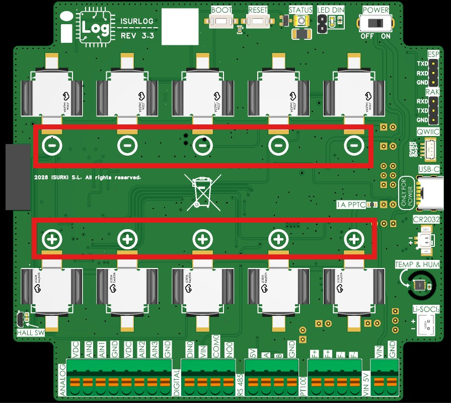
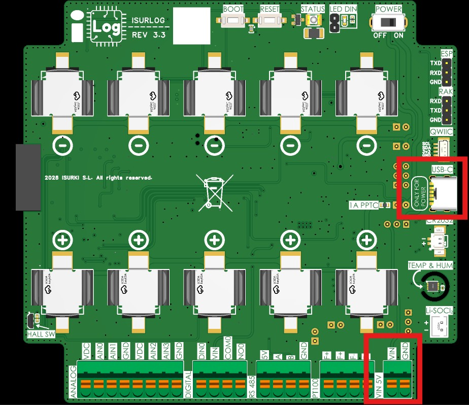
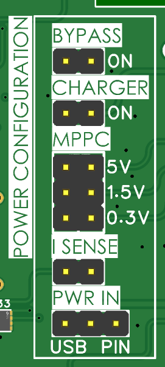
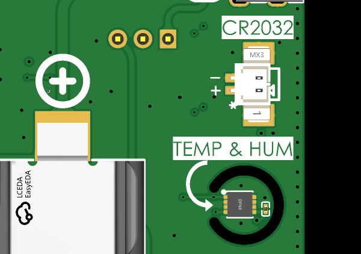

2. Métodos de Alimentación
El ISURLOG ofrece distintas opciones de alimentación para adaptarse al mayor número de situaciones posible.
2.1. Opciones de Alimentación
El ISURLOG incorpora un cargador de batería y una circuitería de gestión de energía integrados, que permiten tres modos de funcionamiento.
Nota de instalación
Para el procedimiento paso a paso de instalación y extracción de las baterías, consultar la sección 4. Instalación y Puesta en Marcha.
2.1.1. Solo Baterías Internas
El dispositivo dispone de cinco portapilas en su parte superior para alojar hasta un máximo de cinco baterías INR18650, con una capacidad total de 17000 mAh. No es necesario usar las cinco baterías; se puede instalar solo una o todas.
- Aviso de polaridad: las baterías deben colocarse respetando las polaridades indicadas en la PCB. No respetar la polaridad puede dañar la PCB de forma irreparable.
- Requisito de seguridad: es importante que todas las baterías conectadas a un mismo ISURLOG tengan el mismo nivel de carga (la misma tensión).

Los cinco portapilas INR18650 — respetar la polaridad marcada en la PCB.
2.1.2. Solo Alimentación Externa
El dispositivo puede alimentarse externamente sin baterías. La fuente de alimentación debe proporcionar una tensión entre 4V y 5V.
- Puntos de conexión:
- Puerto USB-C: situado en la parte inferior derecha de la PCB. Puede usarse un cargador de móvil convencional de 5V con una corriente mínima de 1A.
- Terminales de presión (PIN 5V MAX): los dos últimos terminales de presión de la parte inferior derecha.
Precaución
No usar el puerto USB-C y los terminales de presión simultáneamente como fuentes de alimentación.

Conexiones de alimentación externa — puerto USB-C y terminales de presión PIN.
2.1.3. Baterías + Alimentación Externa (Modo Híbrido)
La última opción para alimentar el ISURLOG es combinar las baterías con alimentación externa. En este modo, la PCB utiliza la alimentación externa mientras esté disponible, y conmuta a las baterías cuando la alimentación externa se interrumpe. Este modo resulta útil para funcionar con baterías y un panel solar, o para seguir operando durante cortes de la alimentación externa. Las baterías se mantienen cargadas mediante el cargador integrado en la PCB, que las carga con una corriente máxima de 400mA.
2.1.4. Baterías No Recargables (Li-SOCl2)
Nota de hardware
Esta opción solo está disponible en revisiones de PCB ISURLOG v3.3 y posteriores.
A partir de la revisión de hardware v3.3, el ISURLOG incorpora un conector PH-2A dedicado, marcado como Li-SOCl2 en la PCB, para alimentar el dispositivo con baterías no recargables de litio-cloruro de tionilo (Li-SOCl2). Esta opción es idónea para instalaciones de larga duración y bajo mantenimiento, en las que la recarga periódica no resulta práctica.
2.2. Configuración de Jumpers para los Modos de Alimentación
Cada uno de los modos de alimentación descritos en los apartados anteriores requiere una configuración específica de jumpers en la PCB del ISURLOG. Es totalmente necesario configurar estos jumpers correctamente para garantizar un suministro de energía estable. Los jumpers están situados en la cara inferior de la PCB.

Los jumpers de alimentación, cara inferior de la PCB.
Qué hace I SENSE
Toda la corriente de las baterías pasa por el jumper I SENSE — como su nombre indica, es el punto donde se puede medir la corriente. En funcionamiento normal debe permanecer cerrado (posición ON, en cortocircuito), como se indica más abajo para cada modo de alimentación. Para medir el consumo real del dispositivo, abrir el jumper e insertar un amperímetro en serie en ese punto — ver Gráficos de Consumo para el procedimiento de medida completo y capturas reales.
Solo Baterías
Para alimentación exclusivamente con baterías, es necesaria la siguiente configuración:
- Charger: desactivado
- MPPC: la configuración de los jumpers MPPC es indiferente en este caso, pero se recomienda la siguiente configuración para la máxima eficiencia energética:
- 5V desactivado
- 1.5V desactivado
- 0.3V desactivado
- I SENSE: posición ON
- PWR IN: indiferente
Solo Alimentación Externa
Para alimentación exclusivamente externa, es necesaria la siguiente configuración:
- Charger: desactivado
- MPPC:
- 5V desactivado
- 1.5V desactivado
- 0.3V desactivado
- I SENSE: posición ON
- PWR IN:
- Para alimentar por el puerto USB, es necesario retirar todos los jumpers de PWR IN.
- Para alimentar por el puerto PIN, es necesario unir el pin 1 con el pin 3 del jumper PWR IN.
Baterías + Alimentación Externa (Modo Híbrido)
Para alimentación con baterías + alimentación externa, es necesaria la siguiente configuración:
- Charger: posición ON
- MPPC: es necesario seleccionar solo una de las tres tensiones de entrada disponibles.
- 5V: activado si la tensión de la fuente externa es de 5V; desactivado en caso contrario.
- 1.5V: activado si la tensión de la fuente externa es de 1.5V; desactivado en caso contrario.
- 0.3V: activado si la tensión de la fuente externa es de 0.3V; desactivado en caso contrario.
- I SENSE: posición ON
- PWR IN:
- Para alimentación externa por el puerto USB, es necesario unir el pin 1 y el pin 2 del jumper PWR IN, la posición USB.
- Para alimentación externa por el puerto PIN, es necesario unir el pin 2 y el pin 3 del jumper PWR IN, la posición PIN.
Baterías No Recargables (Li-SOCl2)
Nota de hardware
El jumper BYPASS solo está presente en revisiones de PCB ISURLOG v3.3 y posteriores.
Para alimentación exclusivamente con baterías Li-SOCl2 no recargables a través del conector PH-2A, es necesaria la siguiente configuración:
- Charger: desactivado
- MPPC:
- 5V desactivado
- 1.5V desactivado
- 0.3V desactivado
- I SENSE: posición ON
- BYPASS: activado
Importante
El Charger y las tres entradas MPPC deben permanecer desactivados siempre que se usen baterías Li-SOCl2 — estas celdas no recargables no deben conectarse nunca al circuito de carga.
Ejemplos de Fuentes de Alimentación para la Entrada MPPC
El ajuste de entrada MPPC (Maximum Power Point Control), usado en el Modo Híbrido, permite al ISURLOG cargar baterías de forma eficiente a partir de distintas fuentes de baja tensión:
- Entrada 5V: esta fuente de alimentación externa puede ser un panel solar de 5V (equipado con un regulador, ya que muchos paneles producen picos de tensión elevados aunque su tensión nominal sea de 5V) o un cargador de 5V estándar.
- Entrada 1.5V: esta tensión de entrada es típicamente compatible con un micropanel solar.
- Entrada 0.3V: esta tensión ultrabaja se usa a menudo con un TEG (generador termoeléctrico), lo que hace al dispositivo apto para aplicaciones de recolección de energía (energy harvesting).
2.3. Batería de Respaldo del RTC (CR2032)
El ISURLOG incluye un reloj de tiempo real (RTC) de ultra bajo consumo que mantiene la hora actual. En funcionamiento normal, este RTC se alimenta del mismo raíl de 3V3 que el resto de la placa — por lo que, cuando el datalogger pierde la alimentación por completo, o se apaga con el botón POWER, el RTC también pierde la alimentación y la hora actual se pierde.
Normalmente esto no supone un problema
El firmware estándar incluye detección automática de pérdida de hora y resincronización, en cualquier variante de conectividad (NB-IoT, LoRaWAN o Wi-Fi): una pérdida de hora del RTC se detecta y corrige automáticamente la próxima vez que el dispositivo se conecta.
Para instalaciones en las que perder la hora es crítico, o para compilaciones de firmware personalizadas que no implementen esta resincronización — o que funcionen exclusivamente como datalogger de almacenamiento local, sin transmisión — puede conectarse una pila de botón CR2032 para mantener el RTC alimentado de forma independiente a la alimentación principal.
- Conector: 2 pines, paso P=1,25mm, marcado como CR2032 en la PCB.
- Polaridad: el pin positivo está marcado con un asterisco (*).

El conector CR2032 — el asterisco marca el pin positivo.